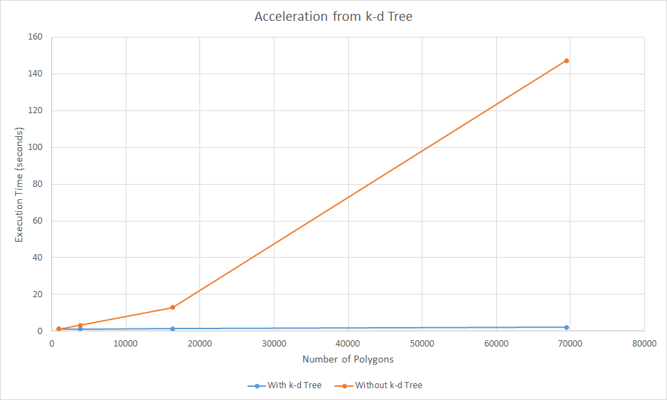
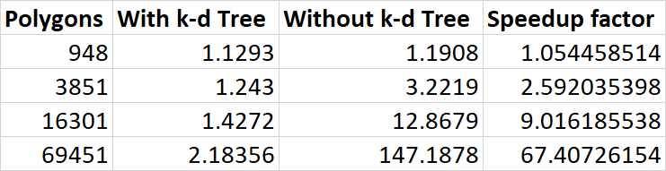
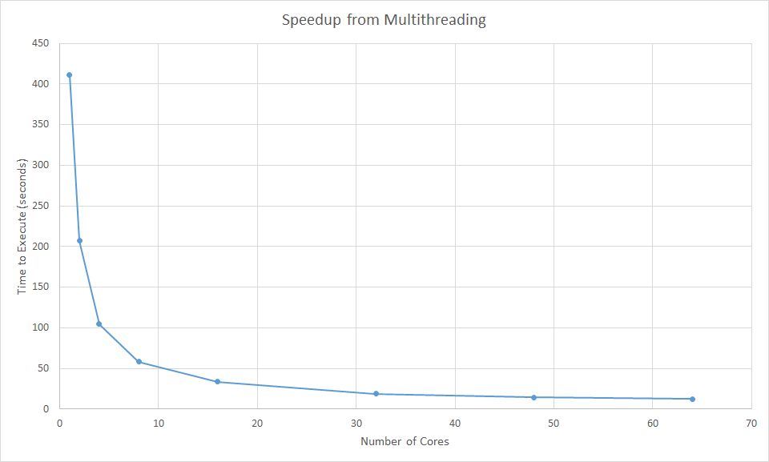
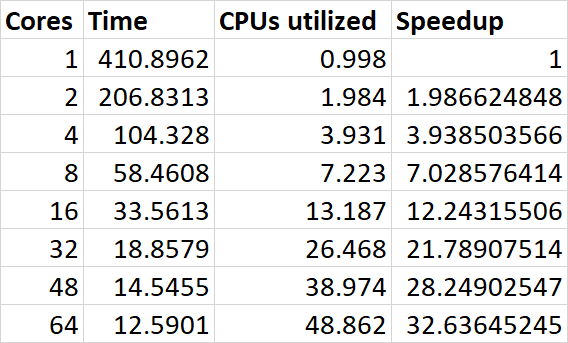

Concept
Rendering a High-Polygon Chess Board Scene
We thought that it would be pretty cool to have a customizable chess board as our scene. One of our team members spent a good amount of time this semester building a chess AI for another class, and so the subject matter was on our mind, and we figured that it would be neat if we could render pleasing-looking scenes representing arbitrary chess states. Once we had a basic rendering of our board, we played around with adding things like reflectance on the tiles. We used chess pieces with a lot of polygons to show off our ray tracer using a complex scene.
Scene
Describe how you built your scene
Original Scene
We built this scene using triangles and imported models as smooth triangles for the chess pieces. In this scene we use perspecitve viewing and include several point light sources with ambient lighting to render the scene. We also use Jitter-Gaussian anti-aliasing to smooth out the jaggies with 9 rays per pixel. Overall, there are 650,000+ polygons captured in our scene which took around 20 seconds to render using a KD tree and multithreading on 8 cores.
Adding Reflections
Reflective
Matte Material
Reflective Material
These images show spheres of different materials that we implemented.
Features
Here are some of the interesting features we implemented on top of the code provided:
Lighting
Ambient Light
Ambient and Point Light
Ambient, Point, and Directional Light
These images show some scenes we created using some of the types of lighting that we implemented.
Materials
Matte Material
Reflective Material
These images show spheres of different materials that we implemented.
Smooth Shading
Flat Shading
Smooth Shading
These two images compare the Stanford bunny triangle mesh with flat and smooth shading. In flat shading, each triangle has a constant normal, causing each triangle to appear "flat". In smooth shading, the normal of each triangle varies based on the normals of the adjacent triangles, creating a smoother appearance. This allows us to better represent smooth surfaces (such as our chess pieces) as triangle meshes.
Anti-Aliasing
No Anti-Aliasing
Regular Sampling with a Box Filter
Jitter Sampling with a Gaussian Filter
These three images demonstrate the two types of anti-aliasing we implemented. The first image contains a scene with three primitives with no anti-aliasing. Notice the unpleasant "jaggies" that appear along the edges of the triangle. The second image uses regular sampling of degree 4 with a box filter, meaning that we cast 16 rays at regular intervals per pixel with equal weight. The third image uses jitter sampling of degree 4 with a gaussian filter. This means that each ray is cast at a random point through its region of the pixel and given more weight if it is closer to the center of the pixel. This approach produces more natural looking images but is more computationally expensive.
Rendering Times
K-D Tree
 We implemented K-D trees as our acceleration structure, and got drastic speedup results after a lot of debugging. It took a lot of effort but it was more than worth it in the end because it allowed us to render complex 1920x1080 scenes in very short amounts of time, giving us the freedom to use higher-resolution models than we anticipated and more complex materials (e.g. reflective). As you can see, the returns are less apparent for small numbers of polygons, but once the number of them gets high enough it's a night-and-day difference.
Multithreading
 Because ray tracing is a highly parallelizable task, we implemented multithreading using Open MP. We rendered a test scene with 16,302 polygons and 800x800 resolution with different numbers of cores ranging from 1 to 64. The graph above demonstrates a a significant speedup with increasing cores, with the program executing 32 times faster on 64 cores compared to 1 core.
Extra Credit Features
The following features we implemented go beyond the basic requirements for this project.
- Multithreading: We implemented multithreading with OpenMp, which increased our execution speed by over 32 times.
- Loading PLYs: We can load any arbitrary triangle mesh ply file.
- Smooth Shading: When loading a triangle mesh, we can choose between smooth or flat shading.
- Regular Sampling with a Box Filter: For simple anti-aliasing, we implemented regular sampling with a box filter. We can specify the degree (number of rays) as a parameter of the sampler.
- Jitter Sampling with a Gaussian Filter: For advanced anti-aliasing, we implemented jitter sampling with a gaussian filter. We can specify the degree and standard deviation as parameters of the sampler.
- Command-line Interface: The user can customize many aspects of the program by passing command line flags. For example, they can specify the output file name or enter "verbose" which prints render information.
- Generalized Camera Viewing While the default infrastructure requires that the viewing plane have a constant z, we generalized the viewing plane to support non constant z. We can support specifying the camera and viewing plane in terms of a camera position, camera angle, and field of view.
- Command-line Interface: The user can customize many aspects of the program by passing command line flags. For example, they can specify the output file name or enter "verbose" which prints render information.
- Configurable Chess Layout: The layout of the pieces on the chess board is read at runtime from the file "chessLayout.txt". This way, the we can change the layout simply by changing the layout file without having to recompile the raytracer.
The Team

Ben
Baral

Matthew
Calligaro

Julia
Read

David
Sobek
We are Computer Science majors at Harvey Mudd College, class of 2020, taking Computer Graphics (CS155) at Pitzer College with Professor Waqar Saleem. Thanks for checking out our raytracing project!
Sources
We would like to give credit to the following third party sources for their assistance in this project:
-
Kevin Suffern's Ray Tracing from the Ground Up
-
Nicholas Sharp's hapPLY for parsing PLY files
-
NeonArtworks' high-poly chess piece models
-
Professor Waqar Saleem, for his lectures and guidance